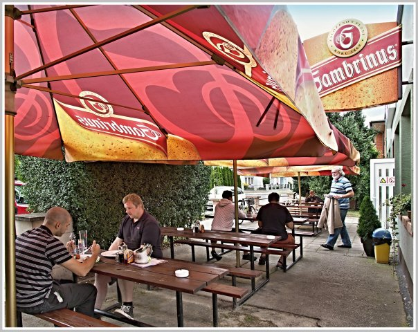

Vítejte v Pardubicích
Moderně vybavené pokoje s vlastní koupelnou, WIFI a parkováním zdarma. Restaurace přímo u penzionu.
O penzionu
Penzion Na Krétě nabízí levné ubytování blízko centra Pardubic, ve vilové čtvrti nedaleko OC Kaufland. Do centra města se pohodlně dostanete spoji MHD – zastávka je vzdálená pouhých 100 m!
Nacházíme se 1 km od AFI Palace, 1 km od ČEZ Arény a 2 km od dostihového závodiště. Moderně a útulně vybavené dvou-, tří- a čtyřlůžkové pokoje, každý s vlastní lednicí, komfortní koupelnou, TV a WIFI.
Společná kuchyňka je vybavená sporákem, mikrovlnnou troubou, rychlovarnou konvicí, nádobím a automatickou pračkou. Mluvíme anglicky a polsky.

Co u nás najdete
Dvou-, tří- a čtyřlůžkové pokoje s vlastní koupelnou, lednicí, TV a WIFI.
Kapacita 50 míst, nekuřácký salonek s 20 místy a LCD TV. Teplá i studená jídla.
V uzavřeném areálu penzionu střeženém kamerami.
Sporák, mikrovlnka, konvice, nádobí a automatická pračka.
Oplocené hřiště přímo u penzionu pro vaše děti.
100 m k MHD, blízko centra, ČEZ Arény i dostihového závodiště.
Napište nám nebo zavolejte a my vám rádi pomůžeme s rezervací.
Kontaktujte nás